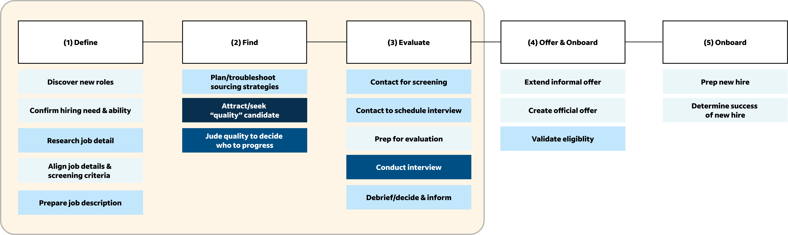
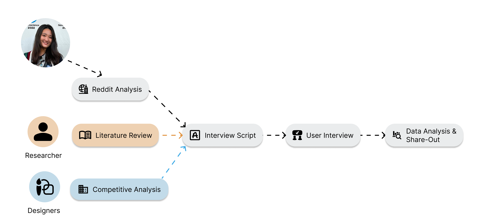
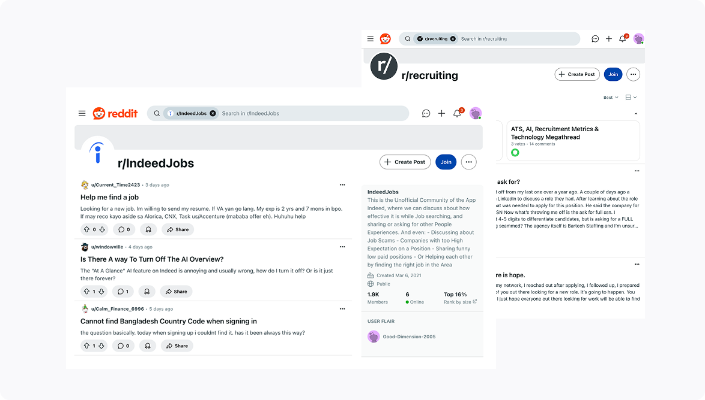
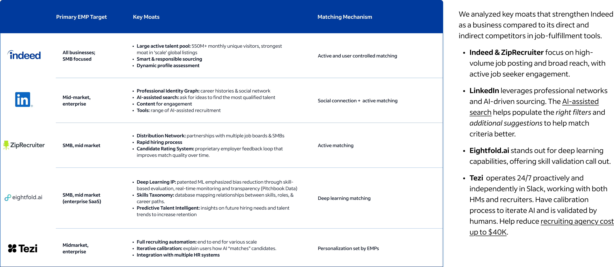

TL;DR
Faced with employers’ lack of trust in AI screening tools for large applicant pools, I led foundational research and design validation to deliver an AI-assisted, human-in-the-loop workflow with 4 core features, which achieved organization-wide visibility and cross-functional buy-in from 2 product teams and senior leadership at Indeed.
Problem Space
Finding the right candidates has always been a headache for employers. Even with all kinds of Application Tracking System (ATS) and algorithms available, employers struggle to translate their time and efforts spent on these tools into efficient hiring and decision-making.
The Challenge
In large applicant pools, employers (EMPs) struggle to identify qualified candidates even with AI toolsdesigned to facilitate resume screening. Without clarity, context, and control, EMPs lack trust to evaluate candidates confidently with AI, leading teams to abandon the tool.
We identified a gap in employer expectation and AI recommendations: despite internal data showing nearly 60% of applicants meet the listed qualifications, candidate quality remains the top employer complaint. The gap lies not in supply but in alignment: a disconnect between employer expectations and how the system surfaces matches.
How would we reimagine the current SMB employer experience to address these opportunities with GenAI at the core?
Project Challenges & Constraints
After stakeholder meeting with Indeed Employer Labs, I have identified the following constraints:
- Since Indeed has already been developing a conversation agent, solution needs to go beyond that
- Given a less-than-5-month timeline for Capstone project, team can only focus
Considering the constraints and timeline, we decided to focus on the early stage of hiring before interviewing candidates.

Generative and Strategic Research
Research Goals
- Understand the current landscape and application of AI in hiring: service and products from Indeed’s competitors (Competitive Analysis)
- Explore ethical considerations in using AI to hire (Reddit Analysis & Literature Review)
- Identify the current pain points of SMB employers in early stage of hiring (In-depth User Interview)
Research Questions
- What are some existing solutions of AI-assisted hiring?
- How are job seekers currently using AI to look for jobs?
- How are employers currently using AI to look for candidates?
- What concerns in ethics, trust, and bias emerge from AI-assisted hiring?
Methodology
🌐
Reddit Analysis
Analyze 2000+ recent posts (posted within 6 months) from r/Indeedjobs and r/recruiting collected via Reddit API
📖
Literature Review
Review 20 papers published within 5 years on AI use in hiring and job seeking
📊
Competitive Analysis
Compare current service and solutions offered by Indeed’s direct competitors and other companies
👥
In-depth User Interview
Conduct 60-minute sessions with 5 SMB employers, consisting of 3 recruiters and 3 hiring managers, with one participant serving in both roles
My Role
I collaborated with 1 researcher and 2 designers in the generative research phase. I led the Reddit analysis and in-depth user interviews and supported literature review and competitive analysis.

Research Execution
To answer our research questions and lay the groundwork for in-depth primary research on EMP pain points, we first conducted observational and secondary research to develop a broad understanding of the space.
Reddit Analysis
I led the Reddit analysis, collecting 2,000+ posts via Reddit API to capture current discussions among job seekers and EMPs. I first used Latent Dirichlet Allocation (LDA) (an unsupervised machine learning technique) to rapidly identify groups of words that tend to appear together, which can then be interpreted as “themes." Then, I manually coded the posts based on the preliminary themes and derived insights based on the initial themes.


Initial Disagreement from Stakeholders
Marketing stakeholders initially questioned the value of this research and were concerned about biased voices from r/IndeedJobs. I emphasized that our objective was not to critique Indeed, but to surface job seekers’ concerns about employers’ use of AI technologies and invited them to think about the importance of incorporating perspectives from both sides of the hiring process, so that as a team, we could build a more equitable tool. Eventually, I gained their buy-in to proceed.
Literature Review
Competitive Analysis

Outcomes & Impacts
Outcomes
Impacts
- Gained buy-in from broader Indeed Employer Labs andniwog Indeed Senior Director of market strategy
- Inlfuenced outside team (Indeed Jobs) product developement
Explore Additional Research Work
Discover other research projects demonstrating my systematic approach to solving complex user and business challenges.